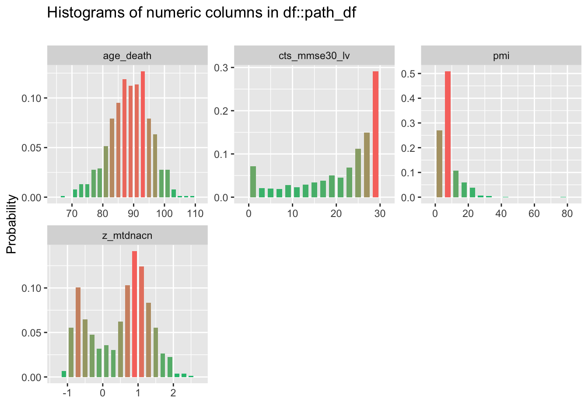
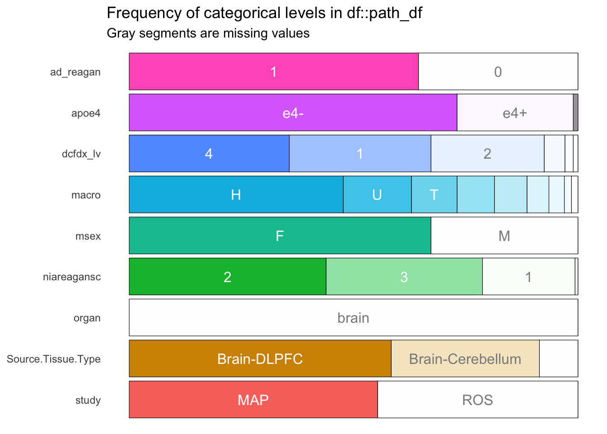
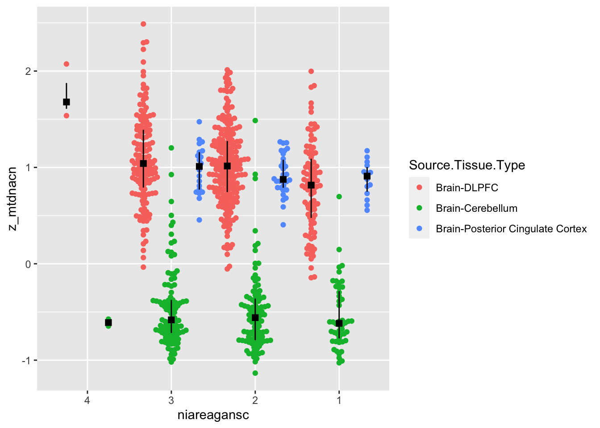
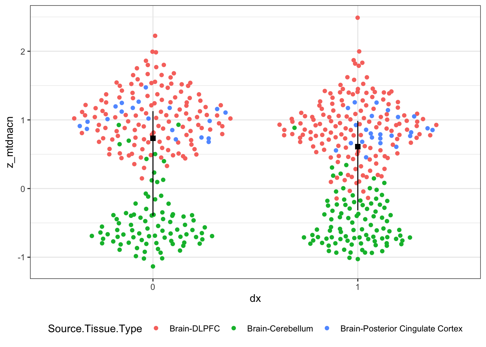

6.2 ROSMAP
6.2.1 NIA-Reagan Diagnosis
path_df <- rosmap.raw %>%
# filter(Source.Tissue.Type %in% c("Brain-DLPFC")) %>%
filter(Source.Tissue.Type %in% c("Brain-DLPFC", "Brain-Posterior Cingulate Cortex", "Brain-Cerebellum", "Whole Blood")) %>%
filter(organ == 'brain') %>%
filter(macro %in% c('H', 'V', 'J', 'T', 'U', 'K', 'I', 'W', 'X')) %>%
filter(!is.na(macro)) %>%
mutate(ad_reagan = fct_recode(niareagansc, "1" = "1", "1" = "2", "0" = "3", "0" = "4"),
ad_reagan = fct_relevel(ad_reagan, "0", "1"),
Source.Tissue.Type = fct_inorder(Source.Tissue.Type)) %>%
dplyr::select(ad_reagan, niareagansc, dcfdx_lv, cts_mmse30_lv, pmi, study, age_death, msex, Source.Tissue.Type, organ, apoe4, z_mtdnacn, macro)
clin_df <- path_df %>%
filter(dcfdx_lv %in% c(1, 4))

# A tibble: 32 x 4
col_name level prop cnt
<chr> <chr> <dbl> <int>
1 ad_reagan 1 0.645 488
2 ad_reagan 0 0.355 269
3 apoe4 e4- 0.731 553
4 apoe4 e4+ 0.259 196
5 apoe4 <NA> 0.0106 8
6 dcfdx_lv 4 0.357 270
7 dcfdx_lv 1 0.316 239
8 dcfdx_lv 2 0.252 191
9 dcfdx_lv 5 0.0462 35
10 dcfdx_lv 6 0.0185 14
# … with 22 more rowspath_res <- glm(ad_reagan ~ z_mtdnacn + macro + age_death + msex + apoe4 + study + Source.Tissue.Type, family = "binomial", data = path_df)
tidy(path_res)# A tibble: 16 x 5
term estimate std.error statistic p.value
<chr> <dbl> <dbl> <dbl> <dbl>
1 (Intercept) -5.86 1.26 -4.67 3.01e- 6
2 z_mtdnacn -0.458 0.197 -2.32 2.03e- 2
3 macroI -0.0310 0.455 -0.0681 9.46e- 1
4 macroJ 0.697 0.337 2.07 3.84e- 2
5 macroK 0.111 0.327 0.340 7.34e- 1
6 macroT 0.153 0.289 0.529 5.97e- 1
7 macroU 0.0153 0.238 0.0643 9.49e- 1
8 macroV 0.344 0.405 0.850 3.96e- 1
9 macroW -0.0875 0.634 -0.138 8.90e- 1
10 macroX 0.368 0.717 0.514 6.08e- 1
11 age_death 0.0759 0.0135 5.62 1.86e- 8
12 msexM -0.330 0.175 -1.89 5.92e- 2
13 apoe4e4+ 1.42 0.223 6.36 2.05e-10
14 studyROS 0.0503 0.171 0.294 7.68e- 1
15 Source.Tissue.TypeBrain-Cerebellum -1.01 0.348 -2.91 3.63e- 3
16 Source.Tissue.TypeBrain-Posterior Cing… -0.0761 0.304 -0.250 8.02e- 1# A tibble: 1 x 7
null.deviance df.null logLik AIC BIC deviance df.residual
<dbl> <int> <dbl> <dbl> <dbl> <dbl> <int>
1 976. 748 -434. 901. 975. 869. 733ggplot(path_df, aes(x = niareagansc, y = z_mtdnacn, colour = Source.Tissue.Type)) +
geom_beeswarm(dodge.width=1) +
geom_pointrange(mapping = aes(x = niareagansc, y = z_mtdnacn, group = Source.Tissue.Type),
show.legend = F, colour = 'black',
# size = 1,
position = position_dodge(width = 1),
shape = 15,
stat = "summary",
fun = median,
fun.min = function(z) {quantile(z,0.25)},
fun.max = function(z) {quantile(z,0.75)}) 
6.2.2 Clinical diagnosis
clin_res <- glm(dcfdx_lv ~ z_mtdnacn + macro + age_death + msex + apoe4 + study + Source.Tissue.Type, family = "binomial", data = clin_df)
tidy(clin_res)# A tibble: 16 x 5
term estimate std.error statistic p.value
<chr> <dbl> <dbl> <dbl> <dbl>
1 (Intercept) -9.89 1.59 -6.21 5.14e-10
2 z_mtdnacn -0.453 0.248 -1.83 6.74e- 2
3 macroI 0.340 0.596 0.571 5.68e- 1
4 macroJ 0.0921 0.396 0.233 8.16e- 1
5 macroK 0.991 0.437 2.27 2.34e- 2
6 macroT -0.0303 0.333 -0.0909 9.28e- 1
7 macroU 0.340 0.283 1.20 2.30e- 1
8 macroV 0.502 0.483 1.04 2.99e- 1
9 macroW 0.595 0.733 0.812 4.17e- 1
10 macroX -0.590 0.734 -0.804 4.21e- 1
11 age_death 0.110 0.0170 6.48 9.25e-11
12 msexM -0.0810 0.213 -0.379 7.04e- 1
13 apoe4e4+ 1.43 0.243 5.88 4.07e- 9
14 studyROS 0.275 0.208 1.32 1.86e- 1
15 Source.Tissue.TypeBrain-Cerebellum -0.426 0.417 -1.02 3.06e- 1
16 Source.Tissue.TypeBrain-Posterior Cing… 0.00284 0.360 0.00789 9.94e- 1# A tibble: 1 x 7
null.deviance df.null logLik AIC BIC deviance df.residual
<dbl> <int> <dbl> <dbl> <dbl> <dbl> <int>
1 697. 503 -301. 634. 702. 602. 488ggplot(clin_df, aes(x = dcfdx_lv, y = z_mtdnacn, colour = Source.Tissue.Type)) +
geom_beeswarm(dodge.width=1) +
geom_pointrange(mapping = aes(x = dcfdx_lv, y = z_mtdnacn, group = Source.Tissue.Type),
show.legend = F, colour = 'black',
# size = 1,
position = position_dodge(width = 1),
shape = 15,
stat = "summary",
fun = median,
fun.min = function(z) {quantile(z,0.25)},
fun.max = function(z) {quantile(z,0.75)}) 
6.2.3 MMSE
mmse_df <- rosmap.raw %>%
filter(Source.Tissue.Type %in% c("Brain-DLPFC", "Brain-Posterior Cingulate Cortex", "Brain-Cerebellum", "Whole Blood")) %>%
filter(organ == 'brain') %>%
# filter(Source.Tissue.Type %in% c("Brain-DLPFC")) %>%
filter(macro %in% c('H', 'V', 'J', 'T', 'U', 'K', 'I', 'W', 'X')) %>%
filter(!is.na(macro)) %>%
filter(!is.na(cts_mmse30_lv)) %>%
filter(!is.na(apoe4)) %>%
dplyr::select(cts_mmse30_lv, z_mtdnacn, mtcn_avg, age_death, msex, apoe4, study, organ, Source.Tissue.Type, macro)
mmse_res <- lm(cts_mmse30_lv ~ z_mtdnacn + age_death + msex + apoe4 + study + Source.Tissue.Type + macro, data = mmse_df)
tidy(mmse_res)# A tibble: 16 x 5
term estimate std.error statistic p.value
<chr> <dbl> <dbl> <dbl> <dbl>
1 (Intercept) 49.2 4.45 11.1 2.19e-26
2 z_mtdnacn 4.02 0.748 5.37 1.07e- 7
3 age_death -0.281 0.0489 -5.74 1.36e- 8
4 msexM 0.823 0.674 1.22 2.22e- 1
5 apoe4e4+ -4.53 0.727 -6.23 7.89e-10
6 studyROS -1.11 0.644 -1.72 8.55e- 2
7 Source.Tissue.TypeBrain-DLPFC -5.44 1.31 -4.16 3.62e- 5
8 Source.Tissue.TypeBrain-Posterior Cing… -3.56 1.60 -2.22 2.67e- 2
9 macroI 1.06 1.74 0.611 5.41e- 1
10 macroJ -0.959 1.18 -0.812 4.17e- 1
11 macroK -1.86 1.24 -1.50 1.34e- 1
12 macroT -0.0334 1.09 -0.0307 9.76e- 1
13 macroU -1.21 0.919 -1.32 1.88e- 1
14 macroV -1.87 1.48 -1.27 2.06e- 1
15 macroW -5.09 2.51 -2.02 4.34e- 2
16 macroX 2.00 2.63 0.761 4.47e- 1
Call:
lm(formula = cts_mmse30_lv ~ z_mtdnacn + age_death + msex + apoe4 +
study + Source.Tissue.Type + macro, data = mmse_df)
Residuals:
Min 1Q Median 3Q Max
-26.323 -4.837 2.173 5.952 14.835
Coefficients:
Estimate Std. Error t value
(Intercept) 49.19945 4.44983 11.056
z_mtdnacn 4.01672 0.74834 5.368
age_death -0.28114 0.04895 -5.744
msexM 0.82340 0.67356 1.222
apoe4e4+ -4.52902 0.72702 -6.230
studyROS -1.10960 0.64437 -1.722
Source.Tissue.TypeBrain-DLPFC -5.44337 1.30968 -4.156
Source.Tissue.TypeBrain-Posterior Cingulate Cortex -3.56105 1.60428 -2.220
macroI 1.06183 1.73695 0.611
macroJ -0.95899 1.18142 -0.812
macroK -1.86319 1.24068 -1.502
macroT -0.03340 1.08882 -0.031
macroU -1.20948 0.91879 -1.316
macroV -1.87349 1.47924 -1.267
macroW -5.08688 2.51404 -2.023
macroX 2.00040 2.62890 0.761
Pr(>|t|)
(Intercept) < 2e-16 ***
z_mtdnacn 1.07e-07 ***
age_death 1.36e-08 ***
msexM 0.2219
apoe4e4+ 7.89e-10 ***
studyROS 0.0855 .
Source.Tissue.TypeBrain-DLPFC 3.62e-05 ***
Source.Tissue.TypeBrain-Posterior Cingulate Cortex 0.0267 *
macroI 0.5412
macroJ 0.4172
macroK 0.1336
macroT 0.9755
macroU 0.1885
macroV 0.2057
macroW 0.0434 *
macroX 0.4469
---
Signif. codes: 0 '***' 0.001 '**' 0.01 '*' 0.05 '.' 0.1 ' ' 1
Residual standard error: 8.525 on 732 degrees of freedom
Multiple R-squared: 0.1459, Adjusted R-squared: 0.1284
F-statistic: 8.336 on 15 and 732 DF, p-value: < 2.2e-16
ASSESSMENT OF THE LINEAR MODEL ASSUMPTIONS
USING THE GLOBAL TEST ON 4 DEGREES-OF-FREEDOM:
Level of Significance = 0.05
Call:
gvlma(x = mmse_res)
Value p-value Decision
Global Stat 9.902e+01 0.00000 Assumptions NOT satisfied!
Skewness 9.500e+01 0.00000 Assumptions NOT satisfied!
Kurtosis 1.424e-05 0.99699 Assumptions acceptable.
Link Function 1.240e+00 0.26545 Assumptions acceptable.
Heteroscedasticity 2.780e+00 0.09546 Assumptions acceptable.# A tibble: 4 x 10
col_name min q1 median mean q3 max sd pcnt_na hist
<chr> <dbl> <dbl> <dbl> <dbl> <dbl> <dbl> <dbl> <dbl> <name>
1 cts_mmse… 0 16 2.49e+1 2.08e+1 2.80e1 3.00e1 9.13e+0 0 <tibb…
2 z_mtdnacn -1.13 -0.296 7.46e-1 5.15e-1 1.10e0 2.49e0 8.13e-1 0 <tibb…
3 mtcn_avg 249. 1346. 2.71e+3 2.41e+3 3.17e3 4.99e3 1.06e+3 0 <tibb…
4 age_death 67.4 84.7 8.90e+1 8.88e+1 9.34e1 1.08e2 6.59e+0 0 <tibb…